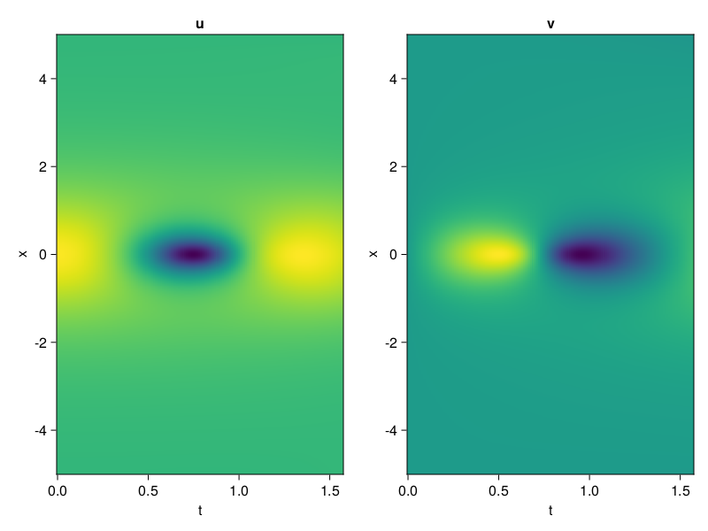
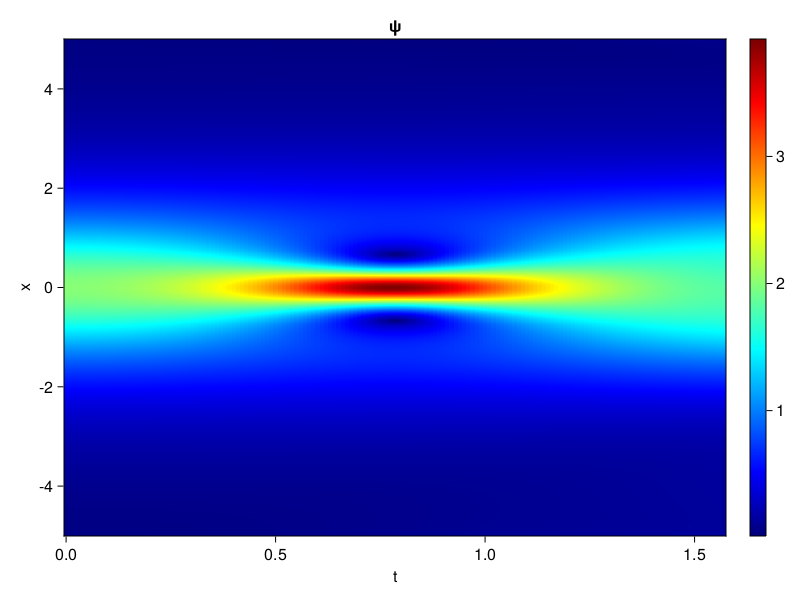
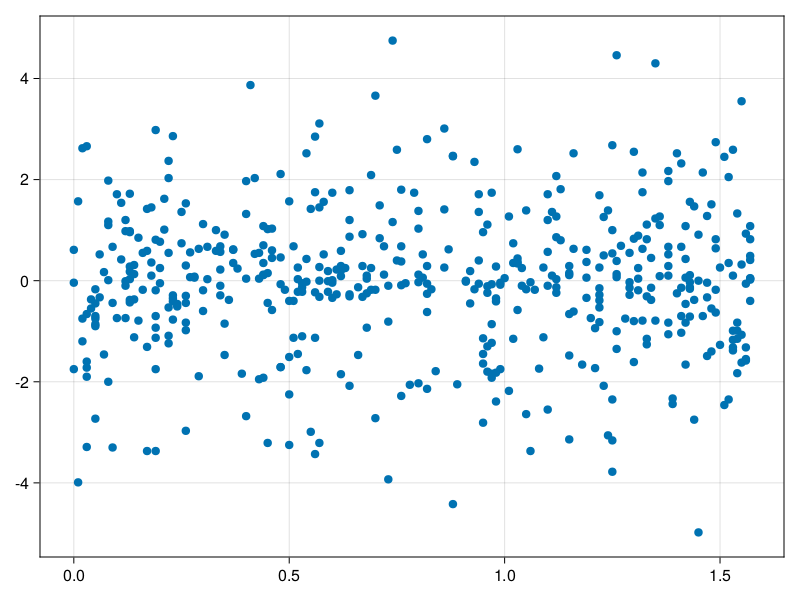

Schrödinger equation
The nonlinear Shrödinger equation is given by
\[\mathrm{i} \partial_t \psi=-\frac{1}{2} \sigma \partial_{x x} \psi-\beta|\psi|^2 \psi\]
Let $\sigma=\beta=1, \psi=u+v i$, the equation can be transformed into a system of partial differential equations
using ModelingToolkit, IntervalSets, Sophon, CairoMakie
using Optimization, OptimizationOptimJL
@parameters x,t
@variables u(..), v(..)
Dₜ = Differential(t)
Dₓ² = Differential(x)^2
eqs=[Dₜ(u(x,t)) ~ -Dₓ²(v(x,t))/2 - (abs2(v(x,t)) + abs2(u(x,t))) * v(x,t),
Dₜ(v(x,t)) ~ Dₓ²(u(x,t))/2 + (abs2(v(x,t)) + abs2(u(x,t))) * u(x,t)]
bcs = [u(x, 0.0) ~ 2sech(x),
v(x, 0.0) ~ 0.0,
u(-5.0, t) ~ u(5.0, t),
v(-5.0, t) ~ v(5.0, t)]
domains = [x ∈ Interval(-5.0, 5.0),
t ∈ Interval(0.0, π/2)]
@named pde_system = PDESystem(eqs, bcs, domains, [x,t], [u(x,t),v(x,t)])\[ \begin{align} \frac{\mathrm{d}}{\mathrm{d}t} u\left( x, t \right) =& - \frac{1}{2} \frac{\mathrm{d}^{2}}{\mathrm{d}x^{2}} v\left( x, t \right) - \left( \left|u\left( x, t \right)\right|^{2} + \left|v\left( x, t \right)\right|^{2} \right) v\left( x, t \right) \\ \frac{\mathrm{d}}{\mathrm{d}t} v\left( x, t \right) =& \frac{1}{2} \frac{\mathrm{d}^{2}}{\mathrm{d}x^{2}} u\left( x, t \right) + \left( \left|u\left( x, t \right)\right|^{2} + \left|v\left( x, t \right)\right|^{2} \right) u\left( x, t \right) \end{align} \]
pinn = PINN(u = Siren(2,1; hidden_dims=16,num_layers=4, omega = 1.0),
v = Siren(2,1; hidden_dims=16,num_layers=4, omega = 1.0))
sampler = QuasiRandomSampler(500, (200,200,20,20))
strategy = NonAdaptiveTraining(1,(10,10,1,1))
prob = Sophon.discretize(pde_system, pinn, sampler, strategy)OptimizationProblem. In-place: true
u0: ComponentVector{Float64}(u = (layer_1 = (weight = [0.4424009919166565 -0.45396310091018677; -0.32292550802230835 -0.19893938302993774; … ; 0.3816831707954407 -0.43872547149658203; 0.3187546133995056 0.021890699863433838], bias = [0.0; 0.0; … ; 0.0; 0.0;;]), layer_2 = (weight = [0.2430303394794464 -0.4745619595050812 … -0.146896094083786 0.5389764904975891; 0.32771003246307373 -0.27378910779953003 … 0.5118051767349243 -0.40157169103622437; … ; 0.22216418385505676 0.04634157940745354 … 0.32217490673065186 -0.5444486141204834; -0.4132925868034363 0.5383700132369995 … 0.4072156548500061 -0.2830599248409271], bias = [0.0; 0.0; … ; 0.0; 0.0;;]), layer_3 = (weight = [0.40674683451652527 0.0742679163813591 … 0.013796433806419373 -0.4742715656757355; 0.5217308402061462 0.5862917304039001 … 0.08033914119005203 -0.29464292526245117; … ; 0.3365454077720642 -0.2586902678012848 … -0.16894209384918213 -0.38824188709259033; 0.1781511753797531 -0.05525026470422745 … -0.4412868618965149 0.060624781996011734], bias = [0.0; 0.0; … ; 0.0; 0.0;;]), layer_4 = (weight = [-0.1825561672449112 -0.3239296078681946 … 0.04242349788546562 0.5301912426948547; -0.21492144465446472 -0.5593560934066772 … -0.05435849353671074 0.19919070601463318; … ; 0.04280842840671539 -0.4722144603729248 … -0.35099273920059204 -0.3770671784877777; 0.13474728167057037 0.17537058889865875 … -0.26857468485832214 0.40257880091667175], bias = [0.0; 0.0; … ; 0.0; 0.0;;]), layer_5 = (weight = [0.30259969830513 0.22619964182376862 … 0.6091713309288025 0.461956650018692], bias = [0.0;;])), v = (layer_1 = (weight = [0.2949276566505432 -0.3525457978248596; 0.3254917860031128 0.23632532358169556; … ; -0.15178632736206055 0.26371586322784424; 0.2566258907318115 0.26132190227508545], bias = [0.0; 0.0; … ; 0.0; 0.0;;]), layer_2 = (weight = [-0.1551329493522644 -0.04219070076942444 … -0.03663332015275955 0.040635935962200165; 0.1185341626405716 0.2874982953071594 … 0.11645481735467911 -0.5326135158538818; … ; -0.15575389564037323 0.13187237083911896 … 0.19677965342998505 0.19204594194889069; -0.3873557150363922 0.18707109987735748 … -0.2454298734664917 0.5997453331947327], bias = [0.0; 0.0; … ; 0.0; 0.0;;]), layer_3 = (weight = [-0.576849639415741 -0.5132726430892944 … 0.319061815738678 0.6107690334320068; -0.5029287934303284 -0.5220170021057129 … -0.3471495509147644 -0.46694377064704895; … ; -0.37613585591316223 0.3950847089290619 … -0.4605737328529358 0.08216415345668793; -0.5857534408569336 0.12623900175094604 … 0.0069918399676680565 -0.5753093361854553], bias = [0.0; 0.0; … ; 0.0; 0.0;;]), layer_4 = (weight = [-0.19898250699043274 0.49171364307403564 … -0.19403527677059174 0.47718632221221924; -0.07415972650051117 -0.3130953907966614 … 0.5198202729225159 0.4028102159500122; … ; -0.5656827688217163 0.5767472982406616 … -0.4345631003379822 0.1304038166999817; 0.5070644021034241 0.3999593257904053 … 0.24966265261173248 -0.29617616534233093], bias = [0.0; 0.0; … ; 0.0; 0.0;;]), layer_5 = (weight = [-0.41238823533058167 0.6088135242462158 … 0.5326903462409973 -0.2860364019870758], bias = [0.0;;])))Now we train the neural nets and resample data while training.
function train(pde_system, prob, sampler, strategy, resample_period = 500, n=10)
bfgs = BFGS()
res = Optimization.solve(prob, bfgs; maxiters=2000)
for i in 1:n
data = Sophon.sample(pde_system, sampler)
prob = remake(prob; u0=res.u, p=data)
res = Optimization.solve(prob, bfgs; maxiters=resample_period)
end
return res
end
res = train(pde_system, prob, sampler, strategy)u: ComponentVector{Float64}(u = (layer_1 = (weight = [0.28972010072128107 -0.24551023607779782; -0.7752704177211154 -0.7315606027627444; … ; 0.4614137865271443 -0.06677054887287122; 0.7042134500477224 0.32089955867189546], bias = [0.05289214732004397; 0.3477146732120862; … ; -0.22678100826081293; 0.026082587634876305;;]), layer_2 = (weight = [-0.11893816864683207 -0.5756904163126616 … -0.6358851768792171 0.8310906030094173; 0.3115434634018671 -0.3659637283457553 … 0.5036814730088781 -0.5008198441826436; … ; 0.4448413649162605 0.2160552427912592 … 0.3751307716487573 -0.4713176593070471; -0.2394135767415369 0.7906229292300553 … 0.436106863909123 -0.24252776126103448], bias = [0.27348791111555165; 0.04704526193286836; … ; 0.41231246114855774; 0.13926328756494263;;]), layer_3 = (weight = [0.18960773600561787 0.09299367207476605 … -0.29861819418403746 -0.6207188889744804; 0.5667616039900272 0.47607811243987264 … -0.0031891337630166714 -0.41163200631252445; … ; 0.8220902494194905 -0.3156801971950659 … -0.35570183371909575 -0.4236295306362417; 0.1492956526856635 -0.03373282001071967 … -0.0185760921550751 0.059591873224581274], bias = [0.07057782764635116; 0.030578106121279123; … ; -0.0770554470637337; -0.05218576805169962;;]), layer_4 = (weight = [-0.11227149519419882 -0.7012923997666444 … -0.31333894697488496 0.6382839572240284; -0.3378766863821538 -0.3614884938103818 … -0.172249461785336 0.43281941301855376; … ; 0.09119026170225607 -0.5512658102627089 … -0.9022114220638928 -0.33857418342018736; 0.18689124301765525 -0.19835155014096237 … -0.6827149744793769 0.05620231395949525], bias = [-0.12058628239852803; 0.31024779424991916; … ; 0.24749956112720364; 0.2213765762200535;;]), layer_5 = (weight = [0.8123045519743449 0.6046392838817622 … 0.7814015502830501 1.1030886021690722], bias = [-0.3820266261729562;;])), v = (layer_1 = (weight = [0.48980502025357864 -0.3311665683514686; 0.49999233434673995 0.06813550806300249; … ; 0.14093902789017812 0.004495332803843883; 0.46951340204442626 0.6426575203077429], bias = [-0.0295259440157836; -0.24993429880717083; … ; 0.028533448195093073; -0.12684000935288142;;]), layer_2 = (weight = [-0.23696606171520618 -0.13882807617256124 … -0.022739027466762863 0.10689345916701211; 0.1681731536346161 0.004213229959022286 … 0.04015481796948872 -0.8663280282733061; … ; -0.01454085649478666 0.12048997768949896 … 0.05444939378029831 0.33417948637849393; -0.27464798217999326 0.1583172213018684 … -0.2208635378008377 0.4784143802499512], bias = [-0.07387752619419695; -0.2609050084130498; … ; -0.047942141653357806; -0.12160153017254564;;]), layer_3 = (weight = [-0.7346389676129099 -0.6037811129490619 … 0.2416330146775021 0.703506572041485; -0.3831215319156626 -0.9021538208490592 … -0.3809538708388754 -0.27943160571692427; … ; -0.7647639484397891 0.2205474513857572 … -0.5766671183004365 0.019980210025388332; -0.533827748966597 -0.3566514606531975 … 0.04511251563090599 -0.27781786463545516], bias = [0.12489763187752105; 0.016130534537579365; … ; 0.06319921408736484; -0.18403398987431174;;]), layer_4 = (weight = [-0.05055841047230966 0.2728921311759767 … 0.11720950544614087 0.42438581255061497; 0.07638309737038895 -0.6112565854313075 … 0.3330593170069144 0.21719023708859642; … ; -0.07538260472533678 1.2316638517386158 … -1.018772080319298 -0.25846626858190486; 0.5748348920380485 -0.04166005023212035 … 0.542910189745398 -0.40305997462905185], bias = [-0.04706910129707421; 0.2298051769775539; … ; -0.5056101385024508; 0.09872232720512383;;]), layer_5 = (weight = [-0.14591136119398224 0.557920415756015 … 0.9311014307299483 -0.36512016198902847], bias = [0.20432705645879612;;])))phi = pinn.phi
ps = res.u
xs, ts= [infimum(d.domain):0.01:supremum(d.domain) for d in pde_system.domain]
u = [sum(phi.u(([x,t]), ps.u)) for x in xs, t in ts]
v = [sum(phi.v(([x,t]), ps.v)) for x in xs, t in ts]
ψ = @. sqrt(u^2+ v^2)
axis = (xlabel="t", ylabel="x", title="u")
fig, ax1, hm1 = heatmap(ts, xs, u', axis=axis)
ax2, hm2= heatmap(fig[1, end+1], ts, xs, v', axis= merge(axis, (; title="v")))
display(fig)
axis = (xlabel="t", ylabel="x", title="ψ")
fig, ax1, hm1 = heatmap(ts, xs, ψ', axis=axis, colormap=:jet)
Colorbar(fig[:, end+1], hm1)
display(fig)
Customize Sampling
Bascially any sampling method is supportted. For example we can sample data according to the predicted solution.
using StatsBase
data = vec([[x, t] for x in xs, t in ts])
wv = vec(ψ)
new_data = wsample(data, wv, 500)
new_data = reduce(hcat, new_data)
fig, ax = scatter(new_data[2,:], new_data[1,:])
prob.p[1] = new_data
prob.p[2] = new_data
prob = remake(prob; u0 = res.u)
# res = Optimization.solve(prob, bfgs; maxiters=1000)OptimizationProblem. In-place: true
u0: ComponentVector{Float64}(u = (layer_1 = (weight = [0.28972010072128107 -0.24551023607779782; -0.7752704177211154 -0.7315606027627444; … ; 0.4614137865271443 -0.06677054887287122; 0.7042134500477224 0.32089955867189546], bias = [0.05289214732004397; 0.3477146732120862; … ; -0.22678100826081293; 0.026082587634876305;;]), layer_2 = (weight = [-0.11893816864683207 -0.5756904163126616 … -0.6358851768792171 0.8310906030094173; 0.3115434634018671 -0.3659637283457553 … 0.5036814730088781 -0.5008198441826436; … ; 0.4448413649162605 0.2160552427912592 … 0.3751307716487573 -0.4713176593070471; -0.2394135767415369 0.7906229292300553 … 0.436106863909123 -0.24252776126103448], bias = [0.27348791111555165; 0.04704526193286836; … ; 0.41231246114855774; 0.13926328756494263;;]), layer_3 = (weight = [0.18960773600561787 0.09299367207476605 … -0.29861819418403746 -0.6207188889744804; 0.5667616039900272 0.47607811243987264 … -0.0031891337630166714 -0.41163200631252445; … ; 0.8220902494194905 -0.3156801971950659 … -0.35570183371909575 -0.4236295306362417; 0.1492956526856635 -0.03373282001071967 … -0.0185760921550751 0.059591873224581274], bias = [0.07057782764635116; 0.030578106121279123; … ; -0.0770554470637337; -0.05218576805169962;;]), layer_4 = (weight = [-0.11227149519419882 -0.7012923997666444 … -0.31333894697488496 0.6382839572240284; -0.3378766863821538 -0.3614884938103818 … -0.172249461785336 0.43281941301855376; … ; 0.09119026170225607 -0.5512658102627089 … -0.9022114220638928 -0.33857418342018736; 0.18689124301765525 -0.19835155014096237 … -0.6827149744793769 0.05620231395949525], bias = [-0.12058628239852803; 0.31024779424991916; … ; 0.24749956112720364; 0.2213765762200535;;]), layer_5 = (weight = [0.8123045519743449 0.6046392838817622 … 0.7814015502830501 1.1030886021690722], bias = [-0.3820266261729562;;])), v = (layer_1 = (weight = [0.48980502025357864 -0.3311665683514686; 0.49999233434673995 0.06813550806300249; … ; 0.14093902789017812 0.004495332803843883; 0.46951340204442626 0.6426575203077429], bias = [-0.0295259440157836; -0.24993429880717083; … ; 0.028533448195093073; -0.12684000935288142;;]), layer_2 = (weight = [-0.23696606171520618 -0.13882807617256124 … -0.022739027466762863 0.10689345916701211; 0.1681731536346161 0.004213229959022286 … 0.04015481796948872 -0.8663280282733061; … ; -0.01454085649478666 0.12048997768949896 … 0.05444939378029831 0.33417948637849393; -0.27464798217999326 0.1583172213018684 … -0.2208635378008377 0.4784143802499512], bias = [-0.07387752619419695; -0.2609050084130498; … ; -0.047942141653357806; -0.12160153017254564;;]), layer_3 = (weight = [-0.7346389676129099 -0.6037811129490619 … 0.2416330146775021 0.703506572041485; -0.3831215319156626 -0.9021538208490592 … -0.3809538708388754 -0.27943160571692427; … ; -0.7647639484397891 0.2205474513857572 … -0.5766671183004365 0.019980210025388332; -0.533827748966597 -0.3566514606531975 … 0.04511251563090599 -0.27781786463545516], bias = [0.12489763187752105; 0.016130534537579365; … ; 0.06319921408736484; -0.18403398987431174;;]), layer_4 = (weight = [-0.05055841047230966 0.2728921311759767 … 0.11720950544614087 0.42438581255061497; 0.07638309737038895 -0.6112565854313075 … 0.3330593170069144 0.21719023708859642; … ; -0.07538260472533678 1.2316638517386158 … -1.018772080319298 -0.25846626858190486; 0.5748348920380485 -0.04166005023212035 … 0.542910189745398 -0.40305997462905185], bias = [-0.04706910129707421; 0.2298051769775539; … ; -0.5056101385024508; 0.09872232720512383;;]), layer_5 = (weight = [-0.14591136119398224 0.557920415756015 … 0.9311014307299483 -0.36512016198902847], bias = [0.20432705645879612;;])))